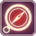

Dhaba's Dark Compass
Open in the wiki →Valuables. Once a priceless tool of adventure, this compass will curse anyone who defies its master. Grants Mag+3
- Category
- Valuables
- Effect
- Once a priceless tool of adventure, this compass will curse anyone who defies its master. Grants Mag+3.